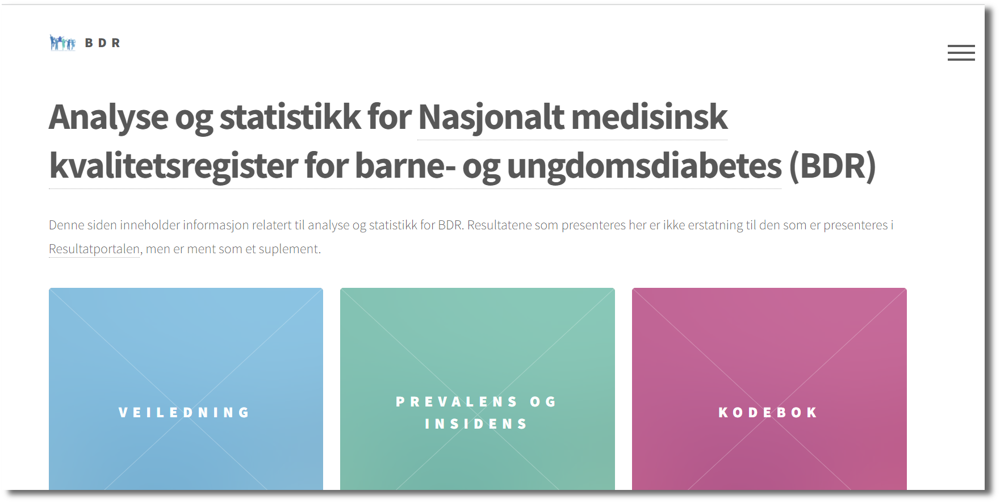
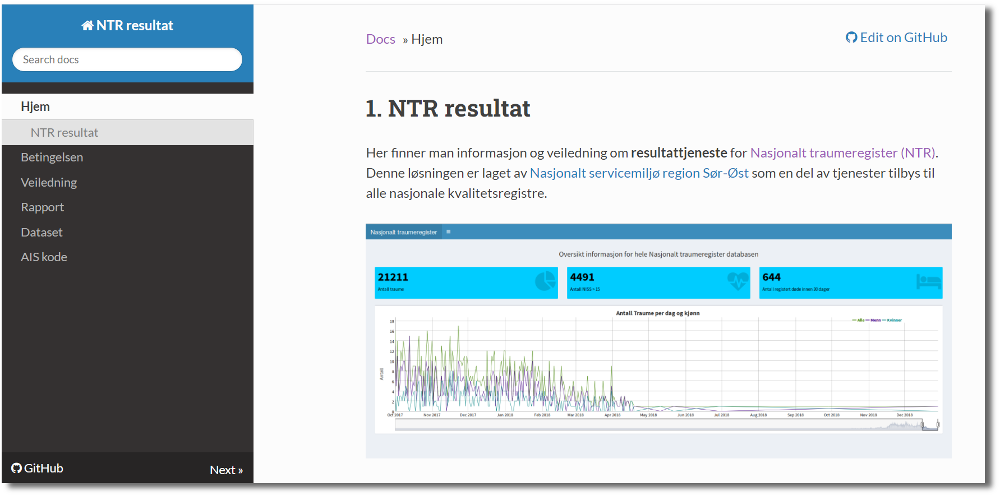

class: inverse, left, middle, hide_logo background-image: url(https://source.unsplash.com/wX2L8L-fGeA) background-size: cover <div> <style type="text/css">.xaringan-extra-logo { width: 110px; height: 128px; z-index: 0; background-image: url(images/fhi_logo_lang.png); background-size: contain; background-repeat: no-repeat; position: absolute; top:1em;right:1em; } </style> <script>(function () { let tries = 0 function addLogo () { if (typeof slideshow === 'undefined') { tries += 1 if (tries < 10) { setTimeout(addLogo, 100) } } else { document.querySelectorAll('.remark-slide-content:not(.title-slide):not(.inverse):not(.hide_logo)') .forEach(function (slide) { const logo = document.createElement('a') logo.classList = 'xaringan-extra-logo' logo.href = 'https://www.fhi.no' slide.appendChild(logo) }) } } document.addEventListener('DOMContentLoaded', addLogo) })()</script> </div><style>.xe__progress-bar__container { top:0; opacity: 1; position:absolute; right:0; left: 0; } .xe__progress-bar { height: 0.25em; background-color: #0051BA; width: calc(var(--slide-current) / var(--slide-total) * 100%); } .remark-visible .xe__progress-bar { animation: xe__progress-bar__wipe 200ms forwards; animation-timing-function: cubic-bezier(.86,0,.07,1); } @keyframes xe__progress-bar__wipe { 0% { width: calc(var(--slide-previous) / var(--slide-total) * 100%); } 100% { width: calc(var(--slide-current) / var(--slide-total) * 100%); } }</style> # Git og Github <img src="images/git-github.png" width="150px" /> ### Et system for versjonskontroll og deling av kode, men... ### Hva er vitsen? .large[Yusman Kamaleri | Avdelingsseminar | Leangkollen 29-30 nov. 2021] [https://bit.ly/ybk-git](https://bit.ly/ybk-git) --- class: hide_logo background-image: url(images/github-changes.png) background-size: 650px background-position: right # Plan - Hva er Git? - Hva er Github? - Hvordan bruker vi dem -- # Betingelse - Tekst f.eks `.sps`, `.do` -- - Nysgjerrig <img src="images/thinking-face.png" width="10%" /> --- background-image: url(images/softwarecenter.png) background-size: 850px background-position: center # Git --- background-image: url(images/softwarecenter3.png) background-size: cover background-position: center # Git --- background-image: url(images/file-changes.png) background-size: 700px background-position: right # Hvorfor - Spore endringer (versjonering) - enkeltvis -- - gruppevis ??? - Gruppevis - Datarensing - Analyse 1 - Svar til reviewer --- background-image: url(images/file.png) background-size: 700px background-position: right # Hvorfor - Spore endringer (versjonering) - enkeltvis - gruppevis --- # Hvordan - Spore endringer lokalt - Repository *(mappe)* -- .panelset[ .panel[.panel-name[Terminal] ```bash git init git add filename.do git commit -m "Finn årsak til bla..bla.." git status git branch git checkout git diff git log ``` Mer forklaring i [freeCodeCamp](https://www.freecodecamp.org/news/git-cheat-sheet/) ] .panel[.panel-name[RStudio] <img src="images/Rstudio-menu.png" width="90%" /> ] .panel[.panel-name[GitHub Desktop] <img src="images/github-desktop01.png" width="90%" /> ] ] --- background-image: url(images/github-site.png) background-size: 950px background-position: center # GitHub --- background-image: url(images/github-site2.png) background-size: cover background-position: center # GitHub --- # Hvorfor - Samarbeide med andre - Åpenhet <img src="images/commit-history.png" width="90%" /> ??? - Åpen institutt - Åpen forskning - Åpen som mulig og lukker når nødvendig --- # Hvordan Lager profil (gratis) på [https://github.com](https://github.com) .panelset[ .panel[.panel-name[Terminal] ```bash git clone git pull git push ``` Mer forklaring i [freeCodeCamp](https://www.freecodecamp.org/news/git-cheat-sheet/) ] .panel[.panel-name[RStudio] <img src="images/RStudio-diff.png" width="90%" /> ] ] --- background-image: url(images/logos.png) background-size: 300px background-position: 750px 150px # Folkehelseprofiler KHfunctions [https://github.com/helseprofil/khfunctions](https://github.com/helseprofil/khfunctions) orgdata [https://helseprofil.github.io/orgdata](https://helseprofil.github.io/orgdata/) norgeo [https://helseprofil.github.io/norgeo](https://helseprofil.github.io/norgeo/) --- # Annen bruk .pull-left[ Kvalitetsregister for barne-og ungdomdiabetes [(BDR)](https://bdreg.github.io/) <a href="https://bdreg.github.io">  </a> ] .pull-right[ Nasjonalt traumeregister [(NTR)](https://ybkamaleri.github.io/traume/) <a href="https://ybkamaleri.github.io/traume">  </a> ] --- class: hide_logo background-image: url(images/fhi-github.png) background-position: center background-size: cover --- class: left, hide_logo background-image: url(https://source.unsplash.com/BjQTmNKlawg) background-position: right background-size: contain # Verd å lese .pull-left[ - [Happy Git and GitHub for the useR](https://happygitwithr.com/index.html) - [Intro to GitHub for Social Scientists Using Stata and Dropbox](https://usermanual.wiki/Pdf/githubmanual.2125143468/help) ]